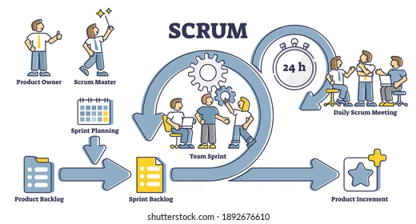
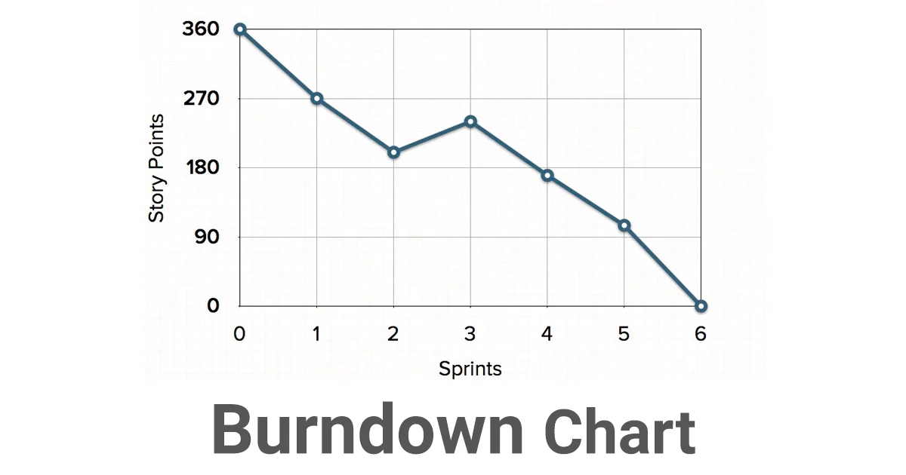
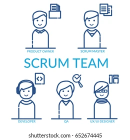
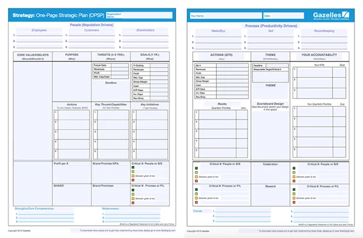
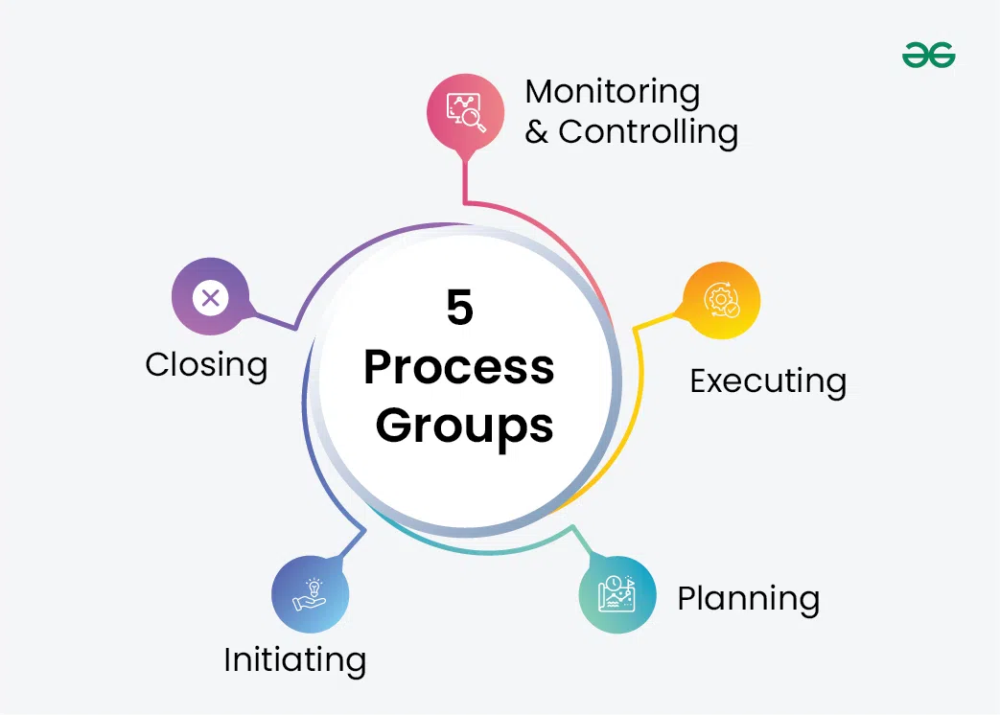

Informacion antes de jugar
SCRUM
Scrum es un marco de trabajo para la gestión de proyectos que se enfoca en la colaboración, la flexibilidad y la entrega de valor continuo al cliente en iteraciones fijas llamadas Sprints, que usualmente duran entre 2 a 4 semanas.
Los roles fijos en Scrum son el Product Owner, quien se encarga de priorizar el Product Backlog, el Scrum Master, que facilita el proceso y elimina obstáculos, y el Development Team, que realiza el trabajo técnico.
Entre sus artefactos más importantes están: el Product Backlog (lista priorizada de requisitos), el Sprint Backlog (trabajo comprometido para el Sprint), y el Incremento (trabajo completado y funcional).
Scrum cuenta con varios eventos, entre ellos el Daily Scrum, una reunión breve diaria para la sincronización diaria del equipo, el Sprint Planning para planear el trabajo del Sprint, el Sprint Review para revisar el trabajo realizado y el Sprint Retrospective para reflexionar y mejorar.
Scrum es ideal para proyectos complejos y dinámicos, donde se requiere una respuesta rápida al cambio, en lugar de un plan fijo. No se enfoca en minimizar costos o eliminar reuniones, sino en asegurar la entrega de valor y la mejora continua.



ONE PAGE PLANNING
One Page Planning es una técnica que permite resumir la información clave de un proyecto en una sola página. Esto permite tener una visión clara y concisa para todos los involucrados.
Su plantilla suele incluir los objetivos clave del proyecto, los requisitos y prioridades, los recursos y presupuesto, y un cronograma de alto nivel. Esto facilita la comunicación de los planes a los stakeholders externos y permite priorizar requisitos de forma efectiva.
A diferencia de Scrum y PMBOK, One Page Planning no es un marco completo de gestión, sino una herramienta complementaria para mostrar la información de forma sencilla.

PMBOK
El PMBOK (Project Management Body of Knowledge) es una guía para proyectos desarrollada por el PMI. A diferencia de Scrum, se basa en una estructura más planificada y controlada. Es útil en entornos donde se necesita una gran planificación y control de los procesos.
El PMBOK se organiza en cinco grupos de procesos: Inicio, Planificación, Ejecución, Monitoreo y Control, y Cierre.
Además, define áreas de conocimiento como: Gestión de la Integración (también llamada proyecto total), Gestión del Alcance, Gestión del Tiempo, Gestión de los Costos, Gestión de la Calidad, Gestión de los Recursos Humanos, Gestión de la Comunicación, Gestión de los Riesgos, y Gestión de las Adquisiciones.
Por ejemplo, el área de Gestión de Riesgos se centra en identificar, analizar y responder a los riesgos, mientras que la Gestión de la Integración busca coordinar todos los elementos del proyecto como un todo coherente.
PMBOK prioriza la planificación, y aunque puede ser menos flexible que Scrum, es adecuado para proyectos rígidos o donde se necesitan procesos bien definidos.
